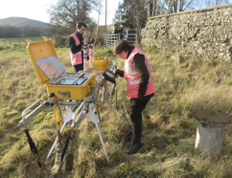
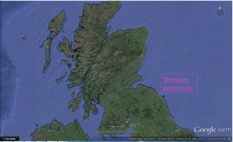
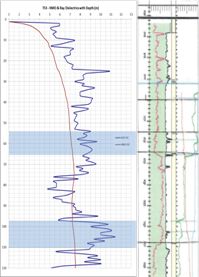
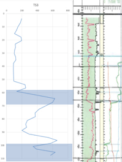
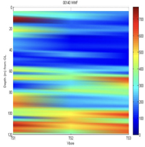

Water identification within aquifers for Scottish Water
The aim of this project was to demonstrate Adrok’s ability to identify the presence of known water aquifers beneath the Terregles survey site, and showcase Adroks repeatability by correlating these aquifers across multiple V-bores.
This would eventually lead to Adrok refining it’s techniques for identifying water in the subsurface and expand relations with Scottish water, offering an integrated geological service for Water exploration The fieldwork survey took place in Terregles, Dumfries, UK on the 29th November 2012. Data was collected from three closely linked survey sites, able to provide a mini 3D survey of the subsurface (Figure 1).
 Figure 1: Terregles survey site.Geological Background
Scottish Water provided downhole logs drilled directly beneath the survey site, specifically detailing subsurface water flow and saturation. The Dumfries Basin aquifer is one of the most important groundwater resources available in Scotland. The Permian filled Dumfries basin overlies steeply dipping Silurian mudstones and sandstone units and is bound to the West and North-East by en-echelon faulting1. The aquifers are contained within the Permian Doweel Breccia and Locharbriggs Sandstone formations, present beneath much of Dumfries basin and are the main aquifers for the region.
The Doweel formation has low intergranular permeability and porosity but has high secondary permeability in the form of fractures. Consequently, horizontal permeability is more prevalent than vertical permeability and therefore water is transported through naturally occurring horizontal fractures and interlayer breaks between sandstone and breccia units that exist throughout the basin, providing a high flow rate for water movement1. This can be seen in the downhole logs provided by Scottish Water on the left hand side of the image in figure 3 and figure 4.
According to the geological information provided by Scottish Water, the two main aquifers are located in multiple fractures between 58-68m and 98-110m. This meant that the aquifer was self-contained within in a less permeable geological unit, confining the water to thin fracture networks. This was useful to Adrok as it meant the difference between the Water rich fracture network and the enveloping non-permeable breccia would provide a stark contrast when analysis the results from its ADR scanner.
 Figure 2: Location map of the area.Results
High Dielectrics (Figure 3) and peaks in the Weighted Mean Frequency (Figure 4) could both be used to directly identify the location of the aquifers within the subsurface matched or closely matched with the fracture zones and therefore the aquifers at 58-68m and 98-110m with only an offset of about 1-2m.
This interpretation was then applied to the remaining V-bores, in an attempt to correlate the same finding across multiple V-bores to produce a mini 3D map of the aquifers beneath the Terregles survey site (Figure 5).
 Figure 3: Dielectrics vs downhole log.  Figure 4: Weighted Mean Frequency vs downhole log.Shown in a surf plot it is clear that the aquifers at 58-68m and 98-110m are being identified by Adroks ADR scanner at the same depths; separately across the three V-bores (Figure 5).
 Figure 5: Surf plot of the Weighted mean frequency across all three V-bores.Client Benefits
Adrok has demonstrated an ability to identify aquifers using a combination of Dielectrics (Figure 3) and Weighted Mean Frequency (Figure 4). The benefits to the client are a cheap, quick, reliable and non-destructive technique that can be used to identify the presence of Water in the field. It could be used to greatly reduce the drilling costs associated with water aquifer exploration for Scottish Water, and help map to great detail fracture pathways in the subsurface.
Project Outcomes
This project has since been expanded upon by other internal projects, most notably the Salt Water PEI project currently under investigation by Adrok Canada. Meetings with the Scottish Environmental Protection Agency (SEPA) have identified a need for a 4D prolonged ADR sensor that would have the capability to be left in the field to continually monitor water levels and may also be able to show flow rates within aquifers. This has applications for early warning flood defences and companies wishing to explore for and monitor water aquifers.